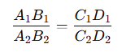

TALES DE MILETO
Tales de Mileto (c. 620 a. C. - c. 546 a. C.)

El filósofo griego Tales nació en Mileto, en la Jonia griega. Aristóteles , la principal fuente de la filosofía y la ciencia de Tales, identificó a Tales como la primera persona que investigó los principios básicos, la cuestión de las sustancias originarias de la materia y, por lo tanto, como el fundador de la escuela de filosofía natural. Tales estaba interesado en casi todo, investigó casi todas las áreas del conocimiento, la filosofía, la historia, la ciencia, las matemáticas, la ingeniería, la geografía y la política. Propuso teorías para explicar muchos de los eventos de la naturaleza, la sustancia primaria, el soporte de la tierra y la causa del cambio. Tales se involucró mucho en los problemas de la astronomía y proporcionó una serie de explicaciones de eventos cosmológicos que tradicionalmente involucraban entidades sobrenaturales. Su enfoque cuestionador para la comprensión de los fenómenos celestiales fue el comienzo de la astronomía griega. Las hipótesis de Tales eran nuevas y audaces, y al liberar los fenómenos de la intervención divina, allanó el camino hacia el esfuerzo científico. Fundó la escuela milesia de filosofía natural, desarrolló el método científico e inició la primera Ilustración occidental. Muchas anécdotas están estrechamente relacionadas con las investigaciones de Tales sobre el cosmos. Cuando se las considera en relación con sus hipótesis, adquieren un significado adicional y resultan sumamente esclarecedoras. Tales era muy estimado en la antigüedad, y una carta citada por Diógenes Laercio, que supuestamente es de Anaxímenes a Pitágoras, aconsejaba que todo nuestro discurso comenzara con una referencia a Tales (DL II.4)
TEOREMA DE THALES
El Teorema de Thales es uno de los fundamentos de la geometría y establece una relación de proporcionalidad en triángulos formados por líneas paralelas. Se utiliza para resolver problemas de semejanza y proporciones.
Enunciado del Teorema de Thales
Si se trazan varias líneas paralelas que cortan a dos rectas transversales, los segmentos correspondientes en las transversales son proporcionales.
Forma geométrica básica
Consideremos un conjunto de líneas paralelas que intersectan dos rectas transversales AB y CD. Los puntos de intersección dividen las transversales en segmentos.
Proporción:

Aplicación en triángulos
El Teorema de Thales también se aplica en triángulos cuando una línea paralela a uno de sus lados divide los otros dos lados en segmentos proporcionales.
Enunciado en triángulos:
Si una línea paralela a uno de los lados de un triángulo intersecta los otros dos lados, divide esos lados en segmentos proporcionales.

Demostración del Teorema de Thales
Sea un triángulo △ABC.
Una línea paralela a BC intersecta AB en P y ACen Q.
Según las propiedades de triángulos semejantes (APQ∼△ABC), los lados correspondientes son proporcionales: